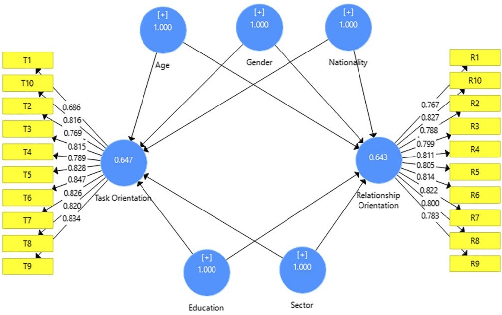

NON SIGNIFICANT DEMOGRAPHIC INFLUENCES
Data shows that gender, nationality, and organizational sector had no significant impact on the leadership orientation of the surveyed UAE managers.

Analysis of Variance Results
Gender Orientation
No significant difference between male and female leaders.
Task p=0.67
Rel p=0.25
National Identity
Consistent leadership behavior across UAE Citizens and Residents.
Task p=0.29
Rel p=0.59
Organizational Sector
Public, private, and semi-government sectors align on core digital leadership orientations.
The "Team Management" approach transcends demographic lines in the UAE's digital transformation context.